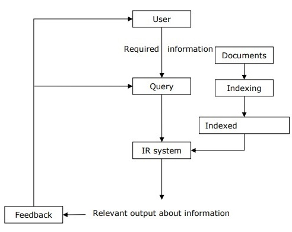

Information retrieval (IR) may be defined as a software program that deals with the organization, storage, retrieval and evaluation of information from document repositories particularly textual information. The system assists users in finding the information they require but it does not explicitly return the answers of the questions. It informs the existence and location of documents that might consist of the required information. The documents that satisfy user’s requirement are called relevant documents. A perfect IR system will retrieve only relevant documents.

Another basic page but this time with a more defined subject.
Back to start